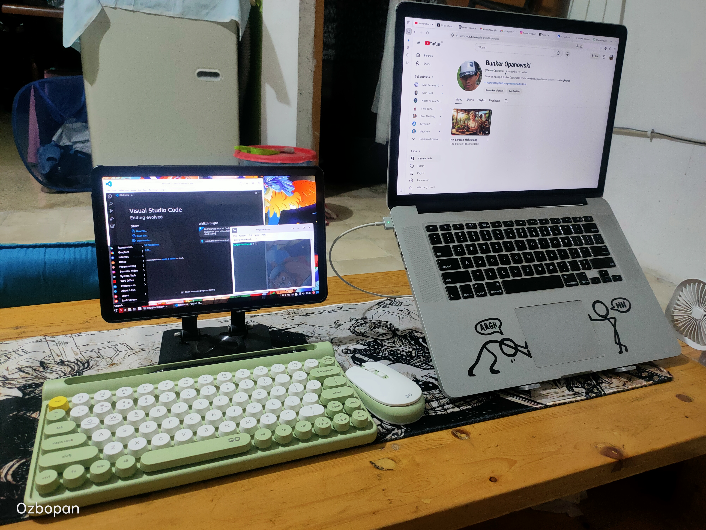

Siapa bilang update website harus selalu dari laptop yang sama? Hari ini gw buktiin sendiri — Bunker Opanowski bisa di-update dari dua device yang beda OS, beda ukuran, beda generasi — tapi tetap sinkron sempurna di GitHub.
Devicenya? MacBook Pro Mid 2015 yang udah jadi legenda di bunker ini, sama Lenovo Xiaoxin Pad 2024 yang diinstall Tiny PC Debian Linux. Dua device, satu workflow, nol konflik.
Ini cerita lengkapnya.

Sebenernya ini berawal dari pertanyaan sederhana: "Bro, update website dari tablet bisa ga?"
Gw pikir-pikir, kenapa enggak? Mac gw udah proven — tapi kan ga selalu harus pegang Mac. Kadang lagi santai pegang tablet, ide dateng, pengen langsung update blog. Masa harus nunggu buka Mac dulu?
Apalagi tablet gw bukan tablet biasa. Lenovo Xiaoxin Pad 2024 ini gw install Tiny PC — Debian Linux versi ringan yang jalan di atas Android. Jadi tablet gw technically punya dua OS: Android buat daily use, Linux buat kerja serius kayak coding dan git.
Tantangannya: gimana caranya dua device ini bisa update website yang sama tanpa saling nabrak? Jawabannya: Git.
Pertama gw harus mastiin tablet siap dulu. Buka Tiny PC, masuk ke QTerminal — ini terminal Linux-nya.
Nah, next tantangan — clone folder website dari GitHub ke tablet. Di sini drama pertama muncul.
Keyboard wireless gw tiba-tiba ga bisa ngetik tanda tilde (~) — tanda yang biasa dipake buat nunjuk home directory. Solusinya? Ganti ~ dengan path lengkap: /home/tiny/. Praktiknya sama persis, cuma lebih eksplisit.
Udah clone, pas mau masuk foldernya pakai cd, selalu "No such file or directory." Ternyata masalahnya sepele: huruf D di Desktop harus kapital. Linux beda sama Mac yang lebih toleran soal ini.
Ini bagian yang paling penting. Bolak-balik device itu boleh, tapi ada satu aturan yang ga boleh dilanggar:
Mac → Cmd+S (save), Cmd+F (cari), Cmd+K (clear terminal)
Tablet → Ctrl+S (save), Ctrl+F (cari), Ctrl+L (clear terminal)
Panah atas ↑ = ulangi command sebelumnya — berlaku di keduanya.
Setelah semua setup selesai, gw cek status git dari tablet:
Setelah nyoba dua-duanya, ini perbandingan jujur dari pengalaman gw hari ini:
Kesimpulan: Mac tetap jadi device utama buat nulis dan ngoding serius. Tablet jadi device backup yang powerful buat update cepat kalau lagi ga pegang Mac.
Gw mau jujur soal satu hal — Lenovo Xiaoxin Pad 2024 ini bukan tablet yang masuk jalur resmi Indonesia. Belum ada distributor resminya di sini.
Gw dapet dari importir, dan gw tau risikonya: ga ada garansi resmi, kalau rusak harus urusin sendiri, dan spesifikasinya memang bukan buat pasar Indonesia — makanya harganya lebih miring dibanding tablet sejenis yang masuk resmi.
Tapi jujur? Gw ga nyesel.
Ini bukan promosi beli tablet ga resmi ya bro. Gw cuma cerita pengalaman gw sendiri. Keputusan lo ya urusan lo — pertimbangin sendiri soal garansi, risiko, dan kebutuhan lo.
Yang mau gw sampaiin justru ini: kreativitas itu ga harus mahal dan ga harus resmi. Bunker Opanowski dibangun dari MacBook 2015 yang udah "uzur" dan tablet yang belum ada di pasaran resmi Indonesia. Hasilnya? Website live di GitHub Pages, blog jalan, workflow multi-device berfungsi sempurna.
Jujur, ada alasan yang lebih dalam kenapa gw mutusin setup tablet ini hari ini.
Si Mac jadul gw — MacBook Pro Mid 2015 — udah 10 tahun lebih umurnya. Dia udah terbukti tangguh, tapi gw tau dia bukan robot. Suatu hari nanti pasti ada drama: baterai kembung, thermal paste kering, atau hal lain yang ga terduga.
Dan kalau hari itu tiba, Bunker Opanowski ga boleh berhenti.
Ini adalah backup plan. Disaster recovery dalam bahasa IT-nya. Sedia payung sebelum hujan — atau dalam bahasa Ciracas: jangan nunggu Mac meriang baru panik.
Dua device, saling melengkapi. Bukan saingan.
Bunker Opanowski sekarang punya dua pintu masuk. Mac di meja kerja buat sesi ngoding panjang, tablet di tangan buat update cepat kapanpun dan dimanapun.
Dua device, satu repo, nol drama — asal ingat satu aturan sakral: PULL DULU SEBELUM EDIT.
Kalau lo juga pengen setup workflow multi-device kayak gini, gw rekomendasiin mulai dari git dulu. Kuasai pull-commit-push, sisanya nyusul sendiri.
Hardware ga nentuin seberapa jauh lo bisa pergi. Kemauan buat belajar yang nentuin.
Tetap autodidak, tetap berkah! 🏴Setup lo lebih ekstrem dari ini? Kabarin di kolom komen! 🔧